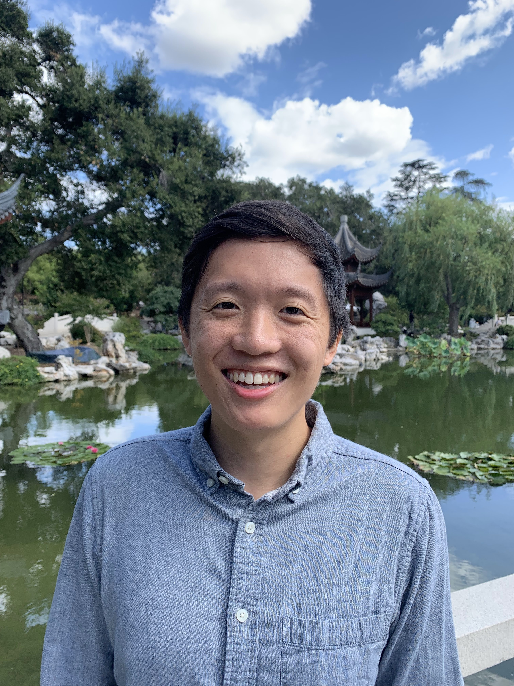

California Institute of Technology
Office: 166 Linde Hall
Email: rhzhaocaltechedu

I was previously a graduate student at UC Berkeley, advised by Xinyi Yuan. Before that, I was an undergraduate at Princeton University. While at Princeton, I completed a senior thesis advised by Chris Skinner.
Here is my CV (last updated 3/14/2024).
For Spring 2024, I am:
About Me
I am a joint postdoc at Caltech and Tsinghua University researching arithmetic geometry.I was previously a graduate student at UC Berkeley, advised by Xinyi Yuan. Before that, I was an undergraduate at Princeton University. While at Princeton, I completed a senior thesis advised by Chris Skinner.
Here is my CV (last updated 3/14/2024).
For Spring 2024, I am:
- Teaching Math 7: Elementary Number Theory.
- Co-Organizing the Caltech–Tsinghua Joint Colloquium.
- Co-Organizing the Caltech Number Theory Seminar.
- Organizing the Lawrence–Venkatesh Learning Seminar.
Research
My research interests are algebraic number theory and arithmetic geometry. I am broadly interested in Arakelov geometry, abelian varieties, and Shimura varieties. I am interested in questions around heights on Shimura varieties and in particular their application to the Zilber–Pink conjecture, and the Existential Closedness Problem for the exponential function and uniformization maps of Shimura varieties.Papers
- Algebraic Independence of Special Points on Shimura Varieties, with Yu Fu, 2024. [arXiv]
- Heights of Special Points on Quaternionic Shimura Varieties, 2023. [arXiv]
- Algebraic Varieties and Automorphic Functions, with Sebastian Eterović, 2021. [arXiv]